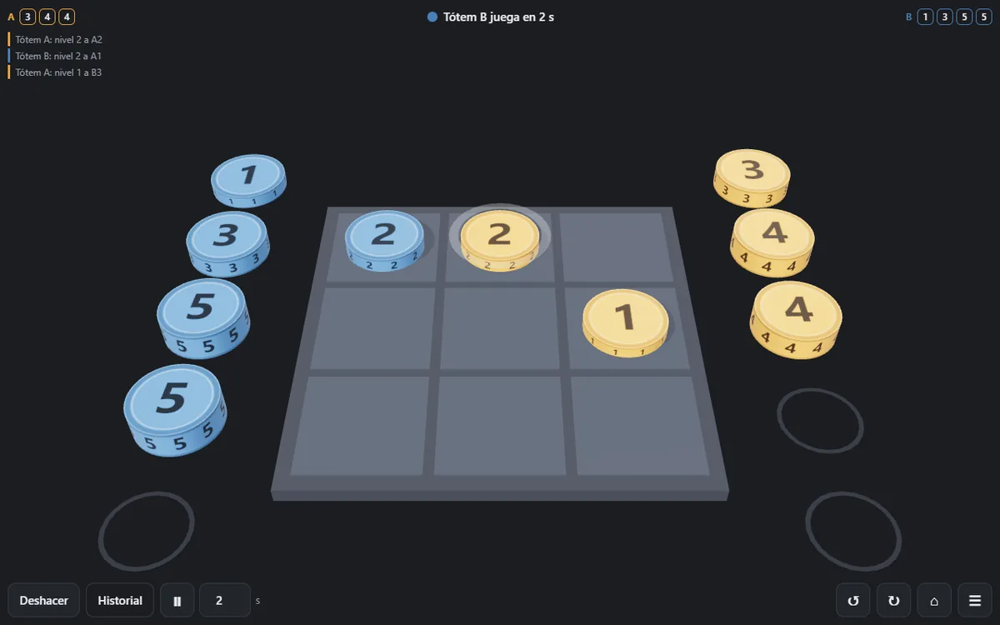

TicTacTotem
Un ta-te-ti donde cada casilla es una pila. En tu turno colocás una ficha numerada de tu mano o movés una tuya encima de otra de nivel menor, tapándola. Gana quien deja tres propias destapadas en línea.
Si tu jugada destapa una línea del rival, perdés vos. Y los dos bandos tienen sets distintos —1 2 3 4 4 contra 1 2 3 5 5—, calibrados para que ninguna apertura gane sola.
Jugar
Código